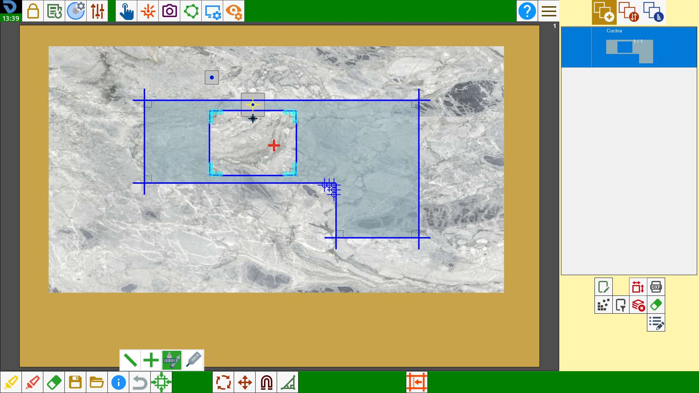

Ermöglicht die Kontrolle der Position des Werkstücks im Arbeitsbereich im Verhältnis zur Position in der Maschine. Wenn „Maschine auf Schnitt“ aktiviert wird, wird ein Schnitt auf dem Bildschirm ausgewählt und die Maschine fährt an die entsprechende Position.
Dieser Vorgang ist nützlich, um zu prüfen, ob ein Schnitt innerhalb des Materials liegt.

Ausführung
Durch Drücken der Schaltfläche wird die Maschine im Arbeitsbereich angezeigt.

Durch Drücken eines Schnitts fährt die Maschine so, dass die Mitte der Scheibe auf dem dem ausgewählten Punkt nächstgelegenen Schnittende positioniert wird.
Erweiterter Modus (Optional)
Im erweiterten Modus können verschiedene Maschinenelemente am ausgewählten Punkt positioniert werden.
Nach Aktivierung der Funktion erscheint das folgende Bedienfeld:

 | Scheibenmitte ausrichten |
 | Kreuzlaser ausrichten |
 | Zweites Werkzeug ausrichten |
 | Tool Plus ausrichten |
Die vierte und letzte Schaltfläche des kleinen Bedienfelds ist nur sichtbar, wenn die Maschine über „Tool Plus“ verfügt.
Scheibenmitte ausrichten
Entspricht dem Standardmodus. Die Maschine fährt so, dass die Scheibenmitte auf dem dem ausgewählten Punkt nächstgelegenen Schnittende positioniert wird.

Kreuzlaser ausrichten
Die Maschine fährt so, dass der Zeiger des Kreuzlasers auf dem dem ausgewählten Punkt nächstgelegenen Schnittende positioniert wird.

Fräser oder Kernbohrer ausrichten
Die Maschine fährt so, dass die Mitte des zweiten in der Maschine montierten Werkzeugs, Fräser oder Kernbohrer, auf dem dem ausgewählten Punkt nächstgelegenen Schnittende positioniert wird.
Um diese Funktion verwenden zu können, muss die Neigung der A-Achse auf 90_ gebracht werden.

Tool Plus ausrichten
Die Maschine fährt so, dass die Mitte des am Tool Plus montierten Werkzeugs auf dem dem ausgewählten Punkt nächstgelegenen Schnittende positioniert wird.